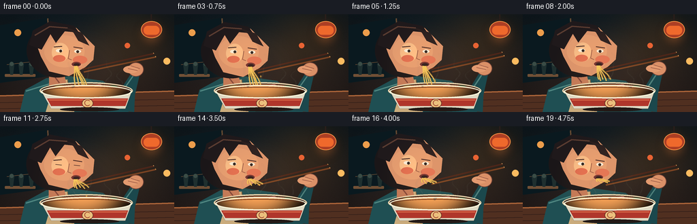

CODING AGENTS AS PIXEL WORLD MODELS
traex/GPT-5.6-Sol · motion_rationality_0000
点击播放 · 原生 RGB 像素
逐轮保存的候选
回放视频、检查图与代码变化。
每份候选均可单独播放。实际图片检查记录在下方工具轨迹中。
候选 01播放与检查图
点击播放 · 原生 RGB 像素

展开代码变化
--- 上一保存版本
+++ 本次保存版本
@@ -0,0 +1,222 @@
+from pathlib import Path
+import json, math, random
+import numpy as np
+from PIL import Image, ImageDraw, ImageFilter
+import artifact_io
+
+CASE_DIR = Path(__file__).resolve().parent
+SPEC = json.loads((CASE_DIR / 'task_spec.json').read_text())
+W, H, N = SPEC['width'], SPEC['height'], SPEC['frames']
+S = 4
+random.seed(12)
+
+# Scaled vector drawing helpers for clean downsampling.
+def sc(v): return int(round(v*S))
+def box(b): return tuple(sc(x) for x in b)
+def pts(p): return [(sc(x), sc(y)) for x,y in p]
+def ellipse(d, b, **kw): d.ellipse(box(b), **kw)
+def polygon(d, p, **kw): d.polygon(pts(p), **kw)
+def line(d, p, fill, width=1, joint='curve'): d.line(pts(p), fill=fill, width=max(1,sc(width)), joint=joint)
+def rounded(d, b, r, **kw): d.rounded_rectangle(box(b), radius=sc(r), **kw)
+def arc(d, b, a0, a1, fill, width=1): d.arc(box(b), a0, a1, fill=fill, width=max(1,sc(width)))
+
+def bezier(p0,p1,p2,p3,n=30):
+ out=[]
+ for u in np.linspace(0,1,n):
+ v=1-u
+ out.append((v**3*p0[0]+3*v*v*u*p1[0]+3*v*u*u*p2[0]+u**3*p3[0],
+ v**3*p0[1]+3*v*v*u*p1[1]+3*v*u*u*p2[1]+u**3*p3[1]))
+ return out
+
+def glow(img, shapes, color, blur):
+ layer=Image.new('RGBA',img.size,(0,0,0,0)); d=ImageDraw.Draw(layer)
+ for b,alpha in shapes: d.ellipse(box(b),fill=(*color,alpha))
+ layer=layer.filter(ImageFilter.GaussianBlur(sc(blur)))
+ img.alpha_composite(layer)
+
+def make_background(t):
+ # Warm, cinematic ramen-bar ambience with a soft vignette.
+ y,x=np.mgrid[0:H*S,0:W*S]
+ yy=y/(H*S-1); xx=x/(W*S-1)
+ top=np.array([17,29,36.]); bot=np.array([49,35,30.])
+ rgb=top[None,None,:]*(1-yy[:,:,None])+bot[None,None,:]*yy[:,:,None]
+ warm=np.exp(-((xx-.77)**2/.055+(yy-.25)**2/.15))[:,:,None]
+ rgb += warm*np.array([28,12,-3])[None,None,:]
+ vig=np.clip(((xx-.5)**2/.32+(yy-.48)**2/.48),0,1)[:,:,None]
+ rgb *= 1-.28*vig
+ # low-key film grain is fixed in screen coordinates, no temporal flicker
+ rng=np.random.default_rng(44)
+ rgb += rng.normal(0,1.2,(H*S,W*S,1))
+ return Image.fromarray(np.uint8(np.clip(rgb,0,255)),'RGB').convert('RGBA')
+
+def draw_steam(img,d,t):
+ # Translucent wisps travel upward while deforming naturally.
+ steam=Image.new('RGBA',img.size,(0,0,0,0)); sd=ImageDraw.Draw(steam)
+ for j,(sx,phase,height) in enumerate([(105,.05,38),(131,.47,45),(158,.73,34),(177,.25,29)]):
+ rise=(t*13 + phase*25)%22
+ y0=108-rise*.45
+ path=[]
+ for k in range(32):
+ u=k/31
+ yy=y0-height*u
+ xx=sx + 4.0*math.sin(u*5.2+phase*8+t*2.0) + 1.8*math.sin(u*11-phase*3)
+ path.append((xx,yy))
+ # fading is approximated with overlapping soft segments
+ for k in range(0,27,3):
+ seg=path[k:k+7]
+ alpha=int(54*(1-k/34))
+ line(sd,seg,(232,241,226,alpha),1.25)
+ steam=steam.filter(ImageFilter.GaussianBlur(sc(.7)))
+ img.alpha_composite(steam)
+
+def frame(i):
+ t=i/(N-1)
+ cyc=math.sin(t*math.pi*4)
+ breath=math.sin(t*math.pi*2)
+ slurp=(1-math.cos(t*math.pi))/2 # continuous noodle retraction
+ img=make_background(t); d=ImageDraw.Draw(img,'RGBA')
+
+ # Background window slats, pendant lamp and defocused shop lights.
+ polygon(d,[(0,16),(71,5),(74,91),(0,101)],fill=(10,25,31,130))
+ line(d,[(70,6),(73,94)],(100,72,49,90),2)
+ line(d,[(10,74),(70,67)],(108,78,53,45),1)
+ glow(img,[((204,10,241,47),70)],(255,130,54),8)
+ d=ImageDraw.Draw(img,'RGBA')
+ line(d,[(222,0),(222,12)],(42,30,26,220),2)
+ ellipse(d,(207,10,238,35),fill=(173,63,36,230),outline=(247,147,70,180),width=sc(1))
+ rounded(d,(211,17,234,30),6,fill=(239,105,44,160))
+ # bokeh accents
+ for bx,by,r,c in [(26,27,5,(237,157,75,36)),(52,44,3,(255,209,119,40)),(187,46,4,(244,103,53,38)),(245,69,5,(251,187,96,30))]:
+ ellipse(d,(bx-r,by-r,bx+r,by+r),fill=c)
+
+ # Wall counter details and table.
+ rounded(d,(7,88,52,92),1,fill=(114,81,54,65))
+ for x0 in (13,27,42):
+ polygon(d,[(x0,73),(x0+8,73),(x0+6,89),(x0+2,89)],fill=(30,47,47,135))
+ ellipse(d,(x0+1,70,x0+7,76),fill=(58,76,70,120))
+ polygon(d,[(0,119),(256,112),(256,144),(0,144)],fill=(80,47,32,255))
+ line(d,[(0,120),(256,113)],(170,100,57,150),2)
+ for yy in (130,139): line(d,[(0,yy),(256,yy-5)],(47,28,24,80),1)
+
+ # Person torso and shoulders; leaning slightly in as the noodles shorten.
+ head_bob=1.2*cyc + 1.5*slurp
+ hx=-1.0*slurp; hy=head_bob
+ polygon(d,[(29,144),(37,111),(68,94),(102,91),(151,98),(179,119),(189,144)],fill=(31,79,83,255))
+ line(d,[(38,113),(77,101),(145,103),(181,126)],(79,135,129,140),2)
+ # apron bib
+ polygon(d,[(81,97),(99,96),(109,144),(67,144)],fill=(203,172,124,235))
+ line(d,[(83,97),(88,137)],(237,211,166,130),1)
+ line(d,[(99,97),(103,137)],(115,81,53,130),1)
+
+ # Ear and neck behind face.
+ polygon(d,[(72+hx,69+hy),(91+hx,75+hy),(98+hx,105+hy),(72+hx,106+hy)],fill=(196,122,88,255))
+ line(d,[(77+hx,88+hy),(87+hx,101+hy)],(126,67,56,130),2)
+ ellipse(d,(52+hx,52+hy,72+hx,76+hy),fill=(207,133,96,255),outline=(99,55,47,220),width=sc(1))
+ arc(d,(57+hx,57+hy,68+hx,70+hy),120,290,(137,74,62,170),1)
+
+ # Hair mass and face, 3/4 view leaning over the bowl.
+ ellipse(d,(39+hx,14+hy,129+hx,93+hy),fill=(26,22,24,255))
+ polygon(d,[(48+hx,29+hy),(72+hx,13+hy),(112+hx,20+hy),(139+hx,47+hy),(137+hx,67+hy),(125+hx,78+hy),(101+hx,91+hy),(72+hx,84+hy),(60+hx,62+hy)],fill=(220,148,107,255))
+ # face warm gradient/highlight overlays
+ ellipse(d,(65+hx,31+hy,124+hx,78+hy),fill=(230,158,114,120))
+ ellipse(d,(76+hx,42+hy,101+hx,70+hy),fill=(255,199,149,35))
+ # swept hair and fringe
+ polygon(d,[(43+hx,45+hy),(48+hx,24+hy),(74+hx,10+hy),(109+hx,17+hy),(116+hx,27+hy),(95+hx,25+hy),(82+hx,42+hy),(74+hx,29+hy),(61+hx,52+hy)],fill=(31,25,27,255))
+ polygon(d,[(93+hx,18+hy),(120+hx,27+hy),(131+hx,46+hy),(115+hx,39+hy),(108+hx,27+hy)],fill=(41,30,30,255))
+ line(d,[(51+hx,31+hy),(73+hx,18+hy),(99+hx,20+hy)],(91,60,49,130),2)
+
+ # Brows and downcast eyes; one natural blink near frame 11.
+ blink=max(0,1-abs(i-11)/1.2)
+ line(d,[(79+hx,48+hy),(91+hx,47+hy)],(71,43,39,230),1.5)
+ line(d,[(108+hx,48+hy),(121+hx,50+hy)],(71,43,39,230),1.5)
+ eyeopen=2.0*(1-blink)
+ if eyeopen>.35:
+ ellipse(d,(82+hx,51+hy,92+hx,54+eyeopen+hy),fill=(250,238,216,235))
+ ellipse(d,(87+hx,52+hy,91+hx,55+eyeopen*.5+hy),fill=(49,38,34,255))
+ ellipse(d,(109+hx,52+hy,119+hx,55+eyeopen+hy),fill=(250,238,216,235))
+ ellipse(d,(112+hx,53+hy,116+hx,56+eyeopen*.5+hy),fill=(49,38,34,255))
+ else:
+ line(d,[(82+hx,54+hy),(91+hx,55+hy)],(72,42,38,240),1)
+ line(d,[(109+hx,55+hy),(118+hx,56+hy)],(72,42,38,240),1)
+ # nose, cheek blush, pursed mouth
+ line(d,[(102+hx,53+hy),(100+hx,65+hy),(105+hx,67+hy)],(142,81,63,175),1)
+ ellipse(d,(107+hx,61+hy,128+hx,73+hy),fill=(219,102,83,35))
+ ellipse(d,(78+hx,60+hy,96+hx,70+hy),fill=(217,91,77,30))
+ mouth=(111+hx,74+hy)
+ ellipse(d,(105+hx,70+hy,119+hx,78+hy),fill=(114,51,48,255))
+ ellipse(d,(108+hx,72+hy,117+hx,76+hy),fill=(48,30,30,255))
+ arc(d,(104+hx,68+hy,120+hx,78+hy),5,170,(246,170,130,170),1)
+
+ # Raised right arm and hand holding chopsticks; subtle rhythmic adjustment.
+ hand_shift=1.4*math.sin(t*math.pi*4+.5)
+ polygon(d,[(169,141),(177,111),(194,84+hand_shift),(205,88+hand_shift),(198,119),(197,144)],fill=(27,72,77,255))
+ line(d,[(180,113),(197,88+hand_shift)],(78,130,125,130),2)
+ # fingers around chopsticks
+ ellipse(d,(188,70+hand_shift,211,91+hand_shift),fill=(219,145,103,255),outline=(120,69,56,180),width=sc(1))
+ ellipse(d,(181,75+hand_shift,203,86+hand_shift),fill=(229,156,113,255))
+ line(d,[(188,79+hand_shift),(202,82+hand_shift)],(151,85,66,100),1)
+ line(d,[(192,75+hand_shift),(205,79+hand_shift)],(151,85,66,100),1)
+
+ # Chopsticks converge toward the noodles near the mouth.
+ chop_tip=(121+hx,81+hy)
+ line(d,[(226,57+hand_shift),chop_tip],(77,38,25,255),2.3)
+ line(d,[(229,62+hand_shift),(123+hx,85+hy)],(122,67,34,255),2.3)
+ line(d,[(225,56+hand_shift),(226,57+hand_shift)],(240,177,100,180),.7)
+ line(d,[(228,61+hand_shift),(229,62+hand_shift)],(240,177,100,180),.7)
+
+ # Bowl behind noodles: back rim and soup surface.
+ ellipse(d,(58,100,195,125),fill=(44,30,26,255),outline=(235,213,174,255),width=sc(2))
+ ellipse(d,(64,103,189,121),fill=(143,73,36,255))
+ ellipse(d,(69,105,184,118),fill=(182,99,44,255))
+ # ramen ingredients at the surface
+ ellipse(d,(78,105,100,113),fill=(221,181,87,220))
+ ellipse(d,(153,105,176,114),fill=(66,109,52,240))
+ polygon(d,[(135,104),(148,103),(154,113),(139,113)],fill=(224,132,113,230))
+ ellipse(d,(105,105,126,115),fill=(239,218,164,230))
+ ellipse(d,(110,107,122,114),fill=(237,172,55,240))
+
+ # Animated noodles. Their exposed length visibly decreases through the shot.
+ bottom_y=105 - 24*slurp
+ # the strands retain a small hanging curve rather than moving rigidly
+ noodle_layer=Image.new('RGBA',img.size,(0,0,0,0)); nd=ImageDraw.Draw(noodle_layer)
+ for j,off in enumerate([-5,-2,1,4,7]):
+ x0=mouth[0]+off*.34
+ xend=118+off*1.5 + 1.8*math.sin(t*6+j)
+ yend=bottom_y + (j%2)*2
+ midy=(mouth[1]+yend)/2
+ path=bezier((x0,mouth[1]+2),(x0+off*.2+2,midy-1),(xend-3,midy+2),(xend,yend),24)
+ line(nd,path,(246,201,91,255),2.0)
+ # warm shadow along one edge provides volume
+ line(nd,[(x+.7,y+.2) for x,y in path],(184,117,48,150),.55)
+ # tiny splash/drop only early and middle, tied to slurping motion
+ if 3 <= i <= 13:
+ drop_y=90+((i-3)*3.0)%13
+ ellipse(nd,(126,drop_y,128,drop_y+3),fill=(226,169,71,180))
+ img.alpha_composite(noodle_layer); d=ImageDraw.Draw(img,'RGBA')
+
+ # Bowl front occludes strand ends and anchors scene depth.
+ polygon(d,[(60,112),(194,112),(184,139),(75,139)],fill=(224,218,196,255),outline=(108,76,61,255))
+ ellipse(d,(60,104,194,124),fill=(0,0,0,0),outline=(247,239,211,255),width=sc(2))
+ # Decorative red bowl band and emblem
+ polygon(d,[(69,124),(188,124),(184,135),(75,135)],fill=(177,54,43,255))
+ line(d,[(72,126),(186,126)],(243,133,91,130),1)
+ ellipse(d,(120,124,137,138),fill=(238,194,127,220),outline=(110,47,38,180),width=sc(1))
+ arc(d,(124,126,133,135),40,320,(157,61,43,220),1)
+ ellipse(d,(88,137,175,143),fill=(34,25,22,150))
+ # rim foreground highlight
+ arc(d,(61,104,193,124),0,180,(255,248,220,255),2)
+ arc(d,(64,107,190,121),180,355,(102,49,31,180),1)
+
+ # Steam is composited last so it can veil the face/chopsticks slightly.
+ draw_steam(img,d,t)
+
+ # A soft warm key light over face and bowl, then downsample.
+ light=Image.new('RGBA',img.size,(0,0,0,0)); ld=ImageDraw.Draw(light)
+ ld.ellipse(box((54,20,186,132)),fill=(255,167,89,12))
+ light=light.filter(ImageFilter.GaussianBlur(sc(14))); img.alpha_composite(light)
+ out=img.convert('RGB').resize((W,H),Image.Resampling.LANCZOS)
+ return np.asarray(out,dtype=np.uint8)
+
+frames=np.stack([frame(i) for i in range(N)],axis=0)
+artifact_io.save(frames,CASE_DIR)
+print('saved',frames.shape,frames.dtype)
候选 02播放与检查图
点击播放 · 原生 RGB 像素

展开代码变化
--- 上一保存版本
+++ 本次保存版本
@@ -196,7 +196,7 @@
# Bowl front occludes strand ends and anchors scene depth.
polygon(d,[(60,112),(194,112),(184,139),(75,139)],fill=(224,218,196,255),outline=(108,76,61,255))
- ellipse(d,(60,104,194,124),fill=(0,0,0,0),outline=(247,239,211,255),width=sc(2))
+ ellipse(d,(60,104,194,124),outline=(247,239,211,255),width=sc(2))
# Decorative red bowl band and emblem
polygon(d,[(69,124),(188,124),(184,135),(75,135)],fill=(177,54,43,255))
line(d,[(72,126),(186,126)],(243,133,91,130),1)
候选 03播放与检查图
可观测工具轨迹
实际执行的命令与返回图片。
命令 1exit 0
/bin/bash -lc "cat prompt.txt && printf '\\n---RULES---\\n' && cat GENERATION_RULES.md && printf '\\n---SPEC---\\n' && cat task_spec.json"
命令 2exit 0
/bin/bash -lc "find . -maxdepth 2 -type f -printf '%p\\n' | sort && printf '\\nTOOLS\\n' && command -v ffmpeg || true && command -v blender || true && command -v python3 || true"
命令 3exit 0
/bin/bash -lc 'cat artifact_io.py'
命令 4exit 0
/bin/bash -lc "cat > generate.py <<'PY'
from pathlib import Path
import json, math, random
import numpy as np
from PIL import Image, ImageDraw, ImageFilter
import artifact_io
CASE_DIR = Path(__file__).resolve().parent
SPEC = json.loads((CASE_DIR / 'task_spec.json').read_text())
W, H, N = SPEC['width'], SPEC['height'], SPEC['frames']
S = 4
random.seed(12)
# Scaled vector drawing helpers for clean downsampling.
def sc(v): return int(round(v*S))
def box(b): return tuple(sc(x) for x in b)
def pts(p): return [(sc(x), sc(y)) for x,y in p]
def ellipse(d, b, **kw): d.ellipse(box(b), **kw)
def polygon(d, p, **kw): d.polygon(pts(p), **kw)
def line(d, p, fill, width=1, joint='curve'): d.line(pts(p), fill=fill, width=max(1,sc(width)), joint=joint)
def rounded(d, b, r, **kw): d.rounded_rectangle(box(b), radius=sc(r), **kw)
def arc(d, b, a0, a1, fill, width=1): d.arc(box(b), a0, a1, fill=fill, width=max(1,sc(width)))
def bezier(p0,p1,p2,p3,n=30):
out=[]
for u in np.linspace(0,1,n):
v=1-u
out.append((v**3*p0[0]+3*v*v*u*p1[0]+3*v*u*u*p2[0]+u**3*p3[0],
v**3*p0[1]+3*v*v*u*p1[1]+3*v*u*u*p2[1]+u**3*p3[1]))
return out
def glow(img, shapes, color, blur):
layer=Image.new('RGBA',img.size,(0,0,0,0)); d=ImageDraw.Draw(layer)
for b,alpha in shapes: d.ellipse(box(b),fill=(*color,alpha))
layer=layer.filter(ImageFilter.GaussianBlur(sc(blur)))
img.alpha_composite(layer)
def make_background(t):
# Warm, cinematic ramen-bar ambience with a soft vignette.
y,x=np.mgrid[0:H*S,0:W*S]
yy=y/(H*S-1); xx=x/(W*S-1)
top=np.array([17,29,36.]); bot=np.array([49,35,30.])
rgb=top[None,None,:]*(1-yy[:,:,None])+bot[None,None,:]*yy[:,:,None]
warm=np.exp(-((xx-.77)**2/.055+(yy-.25)**2/.15))[:,:,None]
rgb += warm*np.array([28,12,-3])[None,None,:]
vig=np.clip(((xx-.5)**2/.32+(yy-.48)**2/.48),0,1)[:,:,None]
rgb *= 1-.28*vig
# low-key film grain is fixed in screen coordinates, no temporal flicker
rng=np.random.default_rng(44)
rgb += rng.normal(0,1.2,(H*S,W*S,1))
return Image.fromarray(np.uint8(np.clip(rgb,0,255)),'RGB').convert('RGBA')
def draw_steam(img,d,t):
# Translucent wisps travel upward while deforming naturally.
steam=Image.new('RGBA',img.size,(0,0,0,0)); sd=ImageDraw.Draw(steam)
for j,(sx,phase,height) in enumerate([(105,.05,38),(131,.47,45),(158,.73,34),(177,.25,29)]):
rise=(t*13 + phase*25)%22
y0=108-rise*.45
path=[]
for k in range(32):
u=k/31
yy=y0-height*u
xx=sx + 4.0*math.sin(u*5.2+phase*8+t*2.0) + 1.8*math.sin(u*11-phase*3)
path.append((xx,yy))
# fading is approximated with overlapping soft segments
for k in range(0,27,3):
seg=path[k:k+7]
alpha=int(54*(1-k/34))
line(sd,seg,(232,241,226,alpha),1.25)
steam=steam.filter(ImageFilter.GaussianBlur(sc(.7)))
img.alpha_composite(steam)
def frame(i):
t=i/(N-1)
cyc=math.sin(t*math.pi*4)
breath=math.sin(t*math.pi*2)
slurp=(1-math.cos(t*math.pi))/2 # continuous noodle retraction
img=make_background(t); d=ImageDraw.Draw(img,'RGBA')
# Background window slats, pendant lamp and defocused shop lights.
polygon(d,[(0,16),(71,5),(74,91),(0,101)],fill=(10,25,31,130))
line(d,[(70,6),(73,94)],(100,72,49,90),2)
line(d,[(10,74),(70,67)],(108,78,53,45),1)
glow(img,[((204,10,241,47),70)],(255,130,54),8)
d=ImageDraw.Draw(img,'RGBA')
line(d,[(222,0),(222,12)],(42,30,26,220),2)
ellipse(d,(207,10,238,35),fill=(173,63,36,230),outline=(247,147,70,180),width=sc(1))
rounded(d,(211,17,234,30),6,fill=(239,105,44,160))
# bokeh accents
for bx,by,r,c in [(26,27,5,(237,157,75,36)),(52,44,3,(255,209,119,40)),(187,46,4,(244,103,53,38)),(245,69,5,(251,187,96,30))]:
ellipse(d,(bx-r,by-r,bx+r,by+r),fill=c)
# Wall counter details and table.
rounded(d,(7,88,52,92),1,fill=(114,81,54,65))
for x0 in (13,27,42):
polygon(d,[(x0,73),(x0+8,73),(x0+6,89),(x0+2,89)],fill=(30,47,47,135))
ellipse(d,(x0+1,70,x0+7,76),fill=(58,76,70,120))
polygon(d,[(0,119),(256,112),(256,144),(0,144)],fill=(80,47,32,255))
line(d,[(0,120),(256,113)],(170,100,57,150),2)
for yy in (130,139): line(d,[(0,yy),(256,yy-5)],(47,28,24,80),1)
# Person torso and shoulders; leaning slightly in as the noodles shorten.
head_bob=1.2*cyc + 1.5*slurp
hx=-1.0*slurp; hy=head_bob
polygon(d,[(29,144),(37,111),(68,94),(102,91),(151,98),(179,119),(189,144)],fill=(31,79,83,255))
line(d,[(38,113),(77,101),(145,103),(181,126)],(79,135,129,140),2)
# apron bib
polygon(d,[(81,97),(99,96),(109,144),(67,144)],fill=(203,172,124,235))
line(d,[(83,97),(88,137)],(237,211,166,130),1)
line(d,[(99,97),(103,137)],(115,81,53,130),1)
# Ear and neck behind face.
polygon(d,[(72+hx,69+hy),(91+hx,75+hy),(98+hx,105+hy),(72+hx,106+hy)],fill=(196,122,88,255))
line(d,[(77+hx,88+hy),(87+hx,101+hy)],(126,67,56,130),2)
ellipse(d,(52+hx,52+hy,72+hx,76+hy),fill=(207,133,96,255),outline=(99,55,47,220),width=sc(1))
arc(d,(57+hx,57+hy,68+hx,70+hy),120,290,(137,74,62,170),1)
# Hair mass and face, 3/4 view leaning over the bowl.
ellipse(d,(39+hx,14+hy,129+hx,93+hy),fill=(26,22,24,255))
polygon(d,[(48+hx,29+hy),(72+hx,13+hy),(112+hx,20+hy),(139+hx,47+hy),(137+hx,67+hy),(125+hx,78+hy),(101+hx,91+hy),(72+hx,84+hy),(60+hx,62+hy)],fill=(220,148,107,255))
# face warm gradient/highlight overlays
ellipse(d,(65+hx,31+hy,124+hx,78+hy),fill=(230,158,114,120))
ellipse(d,(76+hx,42+hy,101+hx,70+hy),fill=(255,199,149,35))
# swept hair and fringe
polygon(d,[(43+hx,45+hy),(48+hx,24+hy),(74+hx,10+hy),(109+hx,17+hy),(116+hx,27+hy),(95+hx,25+hy),(82+hx,42+hy),(74+hx,29+hy),(61+hx,52+hy)],fill=(31,25,27,255))
polygon(d,[(93+hx,18+hy),(120+hx,27+hy),(131+hx,46+hy),(115+hx,39+hy),(108+hx,27+hy)],fill=(41,30,30,255))
line(d,[(51+hx,31+hy),(73+hx,18+hy),(99+hx,20+hy)],(91,60,49,130),2)
# Brows and downcast eyes; one natural blink near frame 11.
blink=max(0,1-abs(i-11)/1.2)
line(d,[(79+hx,48+hy),(91+hx,47+hy)],(71,43,39,230),1.5)
line(d,[(108+hx,48+hy),(121+hx,50+hy)],(71,43,39,230),1.5)
eyeopen=2.0*(1-blink)
if eyeopen>.35:
ellipse(d,(82+hx,51+hy,92+hx,54+eyeopen+hy),fill=(250,238,216,235))
ellipse(d,(87+hx,52+hy,91+hx,55+eyeopen*.5+hy),fill=(49,38,34,255))
ellipse(d,(109+hx,52+hy,119+hx,55+eyeopen+hy),fill=(250,238,216,235))
ellipse(d,(112+hx,53+hy,116+hx,56+eyeopen*.5+hy),fill=(49,38,34,255))
else:
line(d,[(82+hx,54+hy),(91+hx,55+hy)],(72,42,38,240),1)
line(d,[(109+hx,55+hy),(118+hx,56+hy)],(72,42,38,240),1)
# nose, cheek blush, pursed mouth
line(d,[(102+hx,53+hy),(100+hx,65+hy),(105+hx,67+hy)],(142,81,63,175),1)
ellipse(d,(107+hx,61+hy,128+hx,73+hy),fill=(219,102,83,35))
ellipse(d,(78+hx,60+hy,96+hx,70+hy),fill=(217,91,77,30))
mouth=(111+hx,74+hy)
ellipse(d,(105+hx,70+hy,119+hx,78+hy),fill=(114,51,48,255))
ellipse(d,(108+hx,72+hy,117+hx,76+hy),fill=(48,30,30,255))
arc(d,(104+hx,68+hy,120+hx,78+hy),5,170,(246,170,130,170),1)
# Raised right arm and hand holding chopsticks; subtle rhythmic adjustment.
hand_shift=1.4*math.sin(t*math.pi*4+.5)
polygon(d,[(169,141),(177,111),(194,84+hand_shift),(205,88+hand_shift),(198,119),(197,144)],fill=(27,72,77,255))
line(d,[(180,113),(197,88+hand_shift)],(78,130,125,130),2)
# fingers around chopsticks
ellipse(d,(188,70+hand_shift,211,91+hand_shift),fill=(219,145,103,255),outline=(120,69,56,180),width=sc(1))
ellipse(d,(181,75+hand_shift,203,86+hand_shift),fill=(229,156,113,255))
line(d,[(188,79+hand_shift),(202,82+hand_shift)],(151,85,66,100),1)
line(d,[(192,75+hand_shift),(205,79+hand_shift)],(151,85,66,100),1)
# Chopsticks converge toward the noodles near the mouth.
chop_tip=(121+hx,81+hy)
line(d,[(226,57+hand_shift),chop_tip],(77,38,25,255),2.3)
line(d,[(229,62+hand_shift),(123+hx,85+hy)],(122,67,34,255),2.3)
line(d,[(225,56+hand_shift),(226,57+hand_shift)],(240,177,100,180),.7)
line(d,[(228,61+hand_shift),(229,62+hand_shift)],(240,177,100,180),.7)
# Bowl behind noodles: back rim and soup surface.
ellipse(d,(58,100,195,125),fill=(44,30,26,255),outline=(235,213,174,255),width=sc(2))
ellipse(d,(64,103,189,121),fill=(143,73,36,255))
ellipse(d,(69,105,184,118),fill=(182,99,44,255))
# ramen ingredients at the surface
ellipse(d,(78,105,100,113),fill=(221,181,87,220))
ellipse(d,(153,105,176,114),fill=(66,109,52,240))
polygon(d,[(135,104),(148,103),(154,113),(139,113)],fill=(224,132,113,230))
ellipse(d,(105,105,126,115),fill=(239,218,164,230))
ellipse(d,(110,107,122,114),fill=(237,172,55,240))
# Animated noodles. Their exposed length visibly decreases through the shot.
bottom_y=105 - 24*slurp
# the strands retain a small hanging curve rather than moving rigidly
noodle_layer=Image.new('RGBA',img.size,(0,0,0,0)); nd=ImageDraw.Draw(noodle_layer)
for j,off in enumerate([-5,-2,1,4,7]):
x0=mouth[0]+off*.34
xend=118+off*1.5 + 1.8*math.sin(t*6+j)
yend=bottom_y + (j%2)*2
midy=(mouth[1]+yend)/2
path=bezier((x0,mouth[1]+2),(x0+off*.2+2,midy-1),(xend-3,midy+2),(xend,yend),24)
line(nd,path,(246,201,91,255),2.0)
# warm shadow along one edge provides volume
line(nd,[(x+.7,y+.2) for x,y in path],(184,117,48,150),.55)
# tiny splash/drop only early and middle, tied to slurping motion
if 3 <= i <= 13:
drop_y=90+((i-3)*3.0)%13
ellipse(nd,(126,drop_y,128,drop_y+3),fill=(226,169,71,180))
img.alpha_composite(noodle_layer); d=ImageDraw.Draw(img,'RGBA')
# Bowl front occludes strand ends and anchors scene depth.
polygon(d,[(60,112),(194,112),(184,139),(75,139)],fill=(224,218,196,255),outline=(108,76,61,255))
ellipse(d,(60,104,194,124),fill=(0,0,0,0),outline=(247,239,211,255),width=sc(2))
# Decorative red bowl band and emblem
polygon(d,[(69,124),(188,124),(184,135),(75,135)],fill=(177,54,43,255))
line(d,[(72,126),(186,126)],(243,133,91,130),1)
ellipse(d,(120,124,137,138),fill=(238,194,127,220),outline=(110,47,38,180),width=sc(1))
arc(d,(124,126,133,135),40,320,(157,61,43,220),1)
ellipse(d,(88,137,175,143),fill=(34,25,22,150))
# rim foreground highlight
arc(d,(61,104,193,124),0,180,(255,248,220,255),2)
arc(d,(64,107,190,121),180,355,(102,49,31,180),1)
# Steam is composited last so it can veil the face/chopsticks slightly.
draw_steam(img,d,t)
# A soft warm key light over face and bowl, then downsample.
light=Image.new('RGBA',img.size,(0,0,0,0)); ld=ImageDraw.Draw(light)
ld.ellipse(box((54,20,186,132)),fill=(255,167,89,12))
light=light.filter(ImageFilter.GaussianBlur(sc(14))); img.alpha_composite(light)
out=img.convert('RGB').resize((W,H),Image.Resampling.LANCZOS)
return np.asarray(out,dtype=np.uint8)
frames=np.stack([frame(i) for i in range(N)],axis=0)
artifact_io.save(frames,CASE_DIR)
print('saved',frames.shape,frames.dtype)
PY
python3 generate.py
ls -lh pixels.npz inspection.png transition_check.png index.html frames/00.png frames/19.png"命令 5exit 0
/bin/bash -lc "python3 - <<'PY'
from PIL import Image,ImageDraw
im=Image.new('RGBA',(2,2),(255,0,0,255));d=ImageDraw.Draw(im,'RGBA');d.ellipse((0,0,1,1),fill=(0,0,0,0));print(list(im.getdata()))
PY
python3 - <<'PY'
import numpy as np
from PIL import Image
ims=np.stack([np.array(Image.open(f'frames/{i:02}.png')) for i in range(20)])
print('shape',ims.shape,'minmaxmean',ims.min(),ims.max(),ims.mean())
for i in range(1,20): print(i, np.abs(ims[i].astype(int)-ims[i-1].astype(int)).mean(), np.count_nonzero(np.any(ims[i]"'!=ims[i-1],axis=2)))
PY'命令 6exit 0
/bin/bash -lc "python3 generate.py && python3 - <<'PY'
from pathlib import Path
import json, numpy as np
from PIL import Image
spec=json.loads(Path('task_spec.json').read_text())
z=np.load('pixels.npz')['pixels']
frames=np.stack([np.asarray(Image.open(f'frames/{i:02d}.png').convert('RGB')) for i in range(spec['frames'])])
assert frames.shape==(20,144,256,3) and frames.dtype==np.uint8
packed=((frames[...,0].astype(np.uint32)<<16)|(frames[...,1].astype(np.uint32)<<8)|frames[...,2]).transpose(1,2,0)
assert np.array_equal(z,packed)
assert all(Path(x).is_file() and Path(x).stat().st_size>0 for x in ['pixels.npz','index.html','inspection.png','transition_check.png'])
print('validated RGB artifacts; mean adjacent change:',float(np.abs(np.diff(frames.astype(np.int16),axis=0)).mean()))
PY"保存候选 3 份；完成命令 6 次；可验证图片返回 0 张。原始 API 响应与完整日志保留在本地。